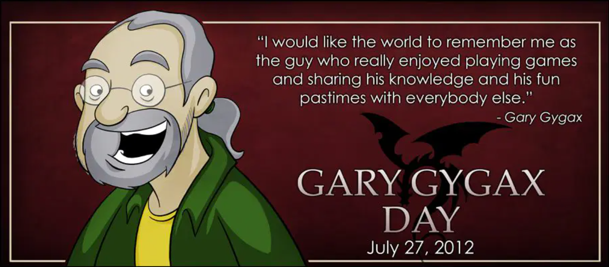
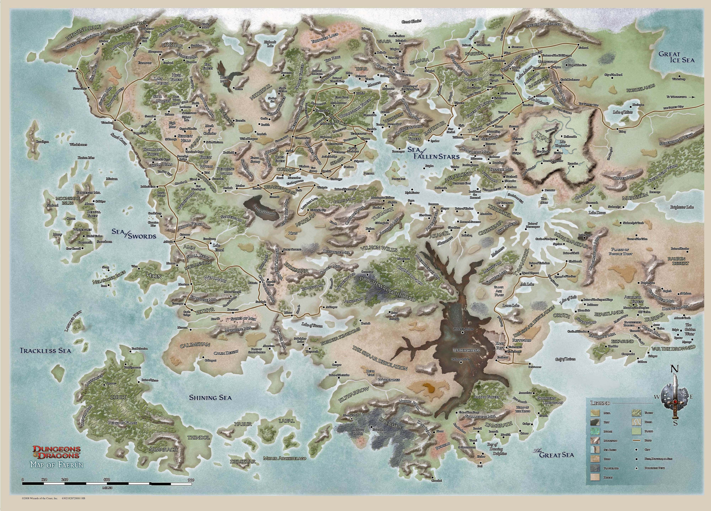

Dungeons and Dragons


A Dungeons & Dragons (DnD) az 1970-es években született meg, pontosabban 1974-ben, amikor Gary Gygax és Dave Arneson először publikálták ezt a forradalmi társasjátékot. A DnD az első olyan szerepjáték volt, amely lehetővé tette a játékosok számára, hogy egyedülálló karaktereket hozzanak létre és vezessenek különböző kalandokon keresztül egy fantáziavilágban. A játék gyorsan népszerűvé vált, és jelentős hatást gyakorolt nem csak a társasjátékok, hanem az egész szórakoztatóipar számára is, elősegítve a fantasy műfaj mainstreambe való bekerülését.

Sorcerer
Warlock
Wizard
Barbarian
Bard
Cleric
Druid
Fighter
Monk
Paladin
Ranger
Rogue
